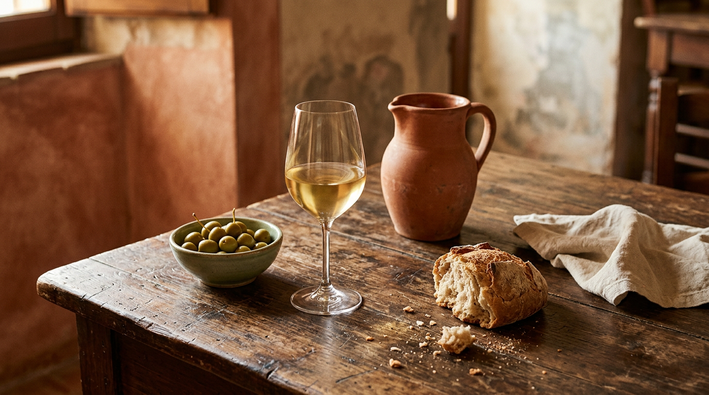

Castelli Romani wine — Frascati, Marino, Colli Albani.

On the slopes of the ancient Latial volcano, between Frascati, Marino and the shores of Lake Albano, wine has been made for two thousand years. They are mostly whites, born from Malvasia and Trebbiano on soils of ash and lapilli. Here is how to find your way through the appellations, what to put on the table and where to find them, starting from Castel Gandolfo.
The appellations, in brief
Castel Gandolfo lies within two appellations. The closest is Colli Albani DOC, established in 1970, covering Ariccia, Albano Laziale, Pomezia, Ardea, Lanuvio and Castel Gandolfo itself: a white from Malvasia del Lazio, Malvasia bianca di Candia and Trebbiano, straw yellow to pale straw, with a vinous, delicate nose, made dry, off-dry, medium-sweet or sweet (Wikipedia). Broader is Castelli Romani DOC, from 1996, covering eighteen municipalities in full, Castel Gandolfo included, and parts of others in the provinces of Rome and Latina, and also allowing reds and rosés (Wikipedia).
The most famous name is still Frascati. The DOC dates from 3 March 1966 and covers Frascati, Grottaferrata, Monte Porzio Catone and parts of Rome and Monte Compatri; Malvasia must make up at least 70% (Wikipedia). Since 2011 two styles have been raised to DOCG: Frascati Superiore, a dry white, and Cannellino di Frascati, a sweet dessert wine (Wikipedia). Finally Marino DOC, named after the Castelli town, allows many styles, from white to passito, with Malvasia bianca di Candia and Malvasia Rossa making up at least half the blend (Wikipedia).
Why “volcanic”
The Frascati Superiore zone covers about 8,300 hectares on the northern slopes of the Alban Hills. The soils come from the eruptions of the so-called Latial Volcano, active from 600,000 years ago: ash and lapilli laid down in thick layers, more or less cemented, between 70 and 500 metres above sea level, facing west and northwest. Warm, sunny Septembers and Octobers let the grapes ripen slowly, in some years until November (Wikipedia).
Malvasia, at least 70%: the signature of the Castelli whites.The blend rule of Frascati DOC
Popes, emperors and innkeepers
These wines have a long history at illustrious tables. In Roman times Marino wine was known as Albanum and drunk in patrician villas on the Alban Hills; in 1536 Charles V, visiting Rome, praised it (Wikipedia). Paul III Farnese, who had been bishop of Tusculum before becoming Pope, preferred Frascati to wines from beyond the Alps, which in his view gave you a headache, and banned them from his table. In 1589 Sixtus V introduced the fojetta, the measure meant to protect the price of wine sold to ordinary people (Wikipedia).
No source, however, documents which wine was served at Castel Gandolfo at the table of the popes on holiday: so we prefer not to tell that story.
What to pair them with
Frascati goes with starters, soups, first courses, fish, white meat and medium-aged cheeses, and is an excellent aperitif (Wikipedia). Marino suits Roman dishes, fish and anchovy-based starters (Wikipedia). Cannellino, a sweet wine, belongs at the end of the meal.
Where and when to drink them
The most traditional way is the fraschetta: the name comes from the leafy branch hung over the door of houses where new wine could be drunk, and today the heart of the phenomenon is nearby Ariccia, with its streets of taverns and porchetta (Wikipedia). From late October comes vino novello, which in Italy may be sold from 30 October of the vintage year; Colli Albani also has its own Novello DOC (Wikipedia).
The best-known festival is Marino's Sagra dell'Uva, founded in 1925 by the poet Leone Ciprelli and held on the first Sunday of October, when wine flows from the fountains, starting with the Fontana dei Quattro Mori of 1632 (Wikipedia). To buy, the best choice is the wineries of the appellation towns and the wine shops of Frascati and Marino, checking the DOC or DOCG on the label.